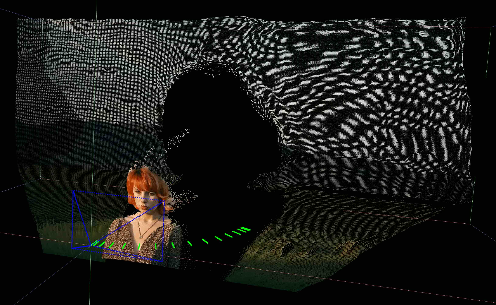
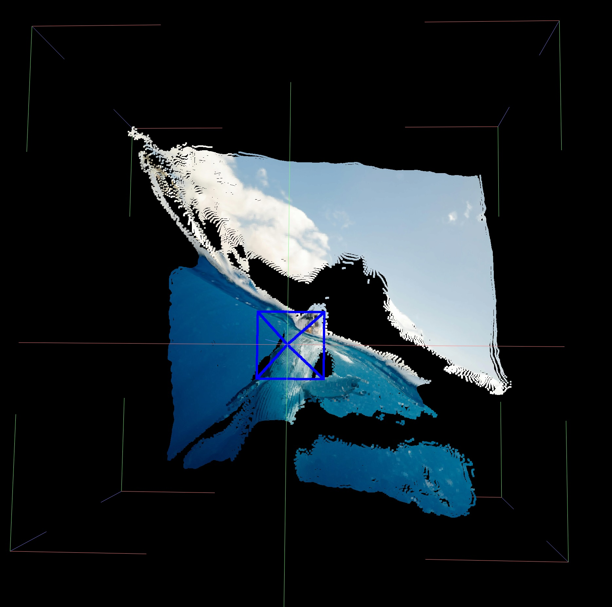
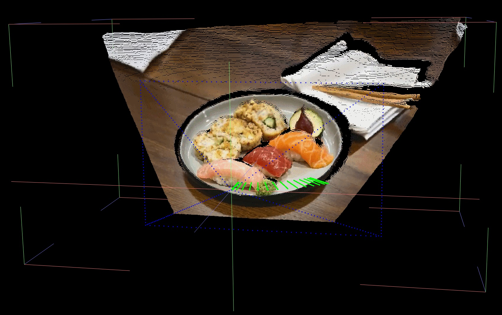
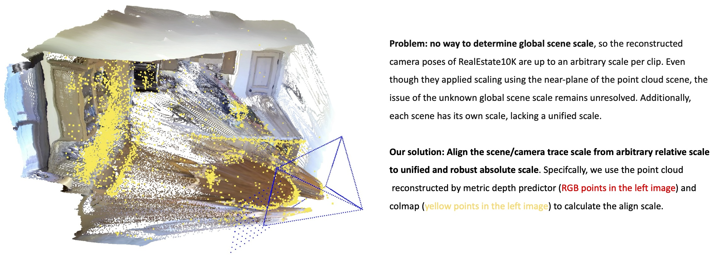

Recent advancements in camera-trajectory-guided image-to-video generation offer higher precision and better support for complex camera control compared to text-based approaches. However, they also introduce significant usability challenges, as users often struggle to provide precise camera parameters when working with arbitrary real-world images without knowledge of their depth nor scene scale. To address these real-world application issues, we propose RealCam-I2V, a novel diffusion-based video generation framework that integrates monocular metric depth estimation to establish 3D scene reconstruction in a preprocessing step. During training, the reconstructed 3D scene enables scaling camera parameters from relative to metric scales, ensuring compatibility and scale consistency across diverse real-world images. In inference, RealCam-I2V offers an intuitive interface where users can precisely draw camera trajectories by dragging within the 3D scene. To further enhance precise camera control and scene consistency, we propose scene-constrained noise shaping, which shapes high-level noise and also allows the framework to maintain dynamic and coherent video generation in lower noise stages. RealCam-I2V achieves significant improvements in controllability and video quality on the RealEstate10K and out-of-domain images. We further enables applications like camera-controlled looping video generation and generative frame interpolation.



